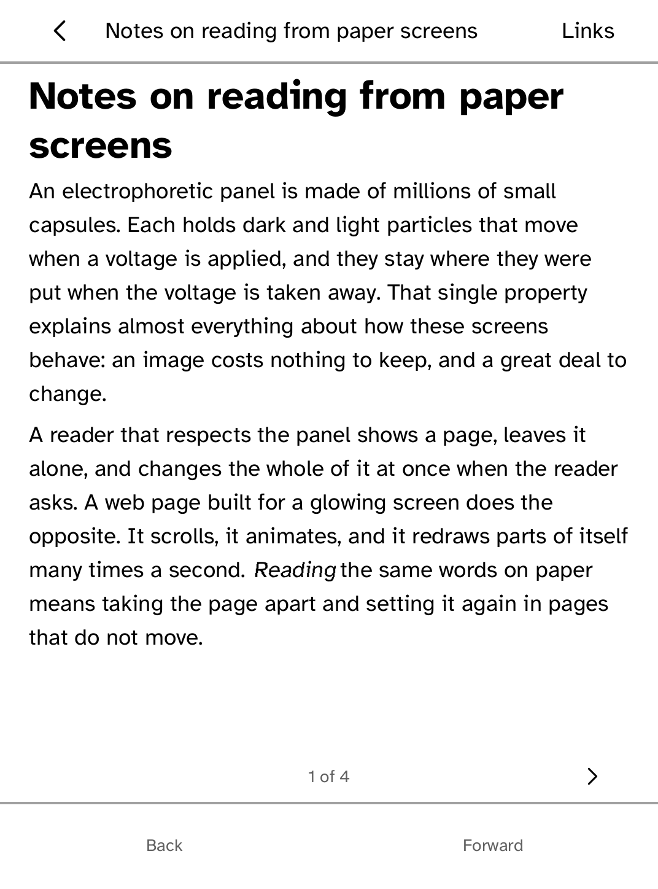

Reading
Browse
A reader's browser: web pages set as pages that turn, with links you tap, a list of every link on the page, and an address field that also searches. No JavaScript; images are not drawn yet.
- Version
- 0.1.0
- Permissions
- network
- Requires
- Cobalt 0.3.18

New in 0.1.0
Open web pages over the network: tap a link or use Go to for an address or a search. Pages that fail say why and offer Try again.
New to Cobalt?
Install Cobalt from your browser
Plug your Kobo into this computer and install Cobalt in about a minute. After that, apps install over Wi-Fi.
Works in Chrome, Edge and Opera. Check your Kobo is supported.
Already have Cobalt?
Link your Kobo to install
On your Kobo, open App Store, tap the globe in the top bar and choose Link browser. Scan the QR code, or enter the pairing code and verification key.
Install on your Kobo
Your Kobo checks the app's signature before installing it.